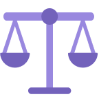

採用情報
職務紹介
-

経営戦略
- 自社を取り巻く経営環境のモニタリングを通じた事業戦略の策定
- 事業全般における重要課題の検討を通じた示唆および解決策の提示
- 中長期戦略および新規事業計画の策定、戦略的投資の支援
-

経営革新
- 顧客視点での価値向上に向けた革新活動の推進
- 革新テーマの発掘を通じた経営成果の創出
-

事業開発
- 事業環境の分析および見通しを踏まえた有望な事業機会の創出・具体化
- 新規事業機会の探索・発掘による新規事業の育成
-

会計／財務／IR
- 財務会計、税務、金融取引に関する分析および財務プロセス管理
- 安定的な経営に向けたリスクの事前確認および投資妥当性分析
- 経営陣の適切な意思決定を支援するための社内外コミュニケーション
-

購買戦略／企画
- 全社目標と整合した中長期購買戦略および業務体系の策定
- 安定的かつ競争力のある購買力の確保
-
戦略購買／管理
- 原材料および部品の量産購買
- 原材料調達購買
- 設備・工事購買
-

開発購買／管理
- 原材料および部品に関する開発購買
-

SCM（サプライチェーン／物流）
- グローバルSCPに基づく供給ターゲットの設定、中長期物流運営計画の策定および高度化
- 生産／品質／購買／資材に関わる物流課題の抽出・対応およびリスク管理
- 物流企画および物流最適化の推進
-

環境・安全
- 大気・水質・エネルギーに関する環境課題の改善、安全事故およびリスク要因の予防管理、緊急対応体制の構築・運用
- 業務上疾病の予防および労働衛生関連法規遵守に向けた基準・制度の策定・運用
- 製品環境法規への対応、管理体制の構築・運用および環境配慮型製品の競争力強化
-

業務支援
- 土地・建物の取得／賃借管理およびオフィス環境の整備・運営
- 潜在的リスクの解消および資産価値向上に向けた対応計画の策定
-

HR (HRM)
- 人事戦略の策定、人事制度・組織構造の設計および運用
- 従業員VOEのモニタリングによる課題把握および管理
- 組織の人材像に適合した優秀人材の確保
-

HR（労使関係）
- 労使関係に関する課題の企画・対応およびリスク管理、事業所における労使業務の支援
※社会保険労務士資格保有者優遇
- 労使関係に関する課題の企画・対応およびリスク管理、事業所における労使業務の支援
-

L&D
- 人材育成体系の構築および育成プログラムの企画・開発・運営
-

組織文化
- 共通の価値観に基づき、社員が業務に集中できる組織環境の構築
-

情報セキュリティ
- 情報セキュリティ戦略・方針およびグローバル情報セキュリティガバナンス体制の構築
- サイバー侵害・情報漏えい対応、コンプライアンス要件（個人情報保護、GDPR等）への対応
- 事業所、ITインフラ、業務プロセスに対するセキュリティ診断およびリスク評価
-

業務革新
- 最適なオペレーション実現に向けたプロセス再設計およびシステム構築
- ESG経営を見据えたプロセス改善および最適ソリューションの導入
- 事業継続性確保に向けたITインフラ運用・対応体制の構築
-

法務
- 法律課題に関する助言および契約書レビュー、法務サービスの提供
- 事業運営に伴う法的リスクへの先行対応、損害賠償（民事）、行政処分（行政）、刑事案件（刑事）に関する訴訟・非訴対応、ならびに公正取引委員会調査への対応
- コンプライアンスリスク点検および教育、取締役会事務局運営、公正取引方針の策定・運用
-

監査／診断
- 正道経営に基づく組織文化の構築および啓発・教育
- 事業成果および業務適正性に関する診断
- 不正・不祥事に関する通報調査対応
-

政策支援
- 政府政策の分析を通じた主要事業課題の支援
- ESG戦略およびESG委員会運営の管理
- 気候変動／社会貢献／共生型成長に関する企画および実行管理
-

広報／マーケティング
- 企業理念および経営方針の発信、対外広報活動を通じた企業価値の向上
- ブランド戦略の策定および広告、デジタルコミュニケーションの運用
- 全社統合マーケティングコミュニケーション戦略の策定およびBTLマーケティングの企画・実行